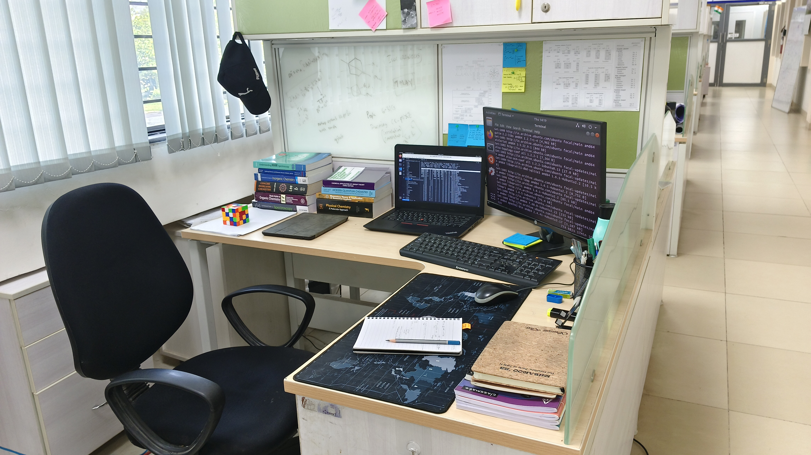

Hi everyone.
I am an MSc-PhD student at TIFRH. Currently, I am working on NMR, Machine Learning, and Aromaticity.

Notifications
- _____ SMILES to NMR _____
13C-NMR spectra of organic molecules from SMILES with just a click!
Try our app: [Click Here] - New Publication: [Click Here]
- I have presented my Master's thesis work ("Enhancing NMR Shielding Predictions of Atoms-in-Molecules Machine Learning Models with Neighborhood-Informed Representations") at the In-house Symposium organized by TIFRH. [Click Here]
Recent Publications:
- Das, S. & Ramakrishnan, R. (2026). Enhancing NMR Shielding Predictions of Atoms-in-Molecules Machine Learning Models with Neighborhood-Informed Representations. J. Chem. Phys., 164(4), 044106. DOI: 10.1063/5.0306349
- Banchode, R., Das, S., Raghunathan, S., & Ramakrishnan, R. (2025). Machine-Learned Potentials for Solvation Modeling. J. Phys.: Condens. Matter, 38(1), 013002. DOI: 10.1088/1361-648X/ae2177
- Majumdar, A., Das, S., & Ramakrishnan, R. (2025). Unlocking Inverted Singlet-Triplet Gap in Alternant Hydrocarbons with Heteroatoms. Chem. Sci., 16(31), 14392-14407. DOI: 10.1039/D5SC02309B